圧縮ツールに必要なことはすべて
zip、7z、rar、tar、iso など数十の形式を開けます。zip、7z、tar は AES-256 のパスワード付きで作成できます。閲覧、検索、エクスプローラーへのドラッグでの取り出しに加え、圧縮ファイルを別の形式に変換することもできます。元のファイルは削除するまで残ります。
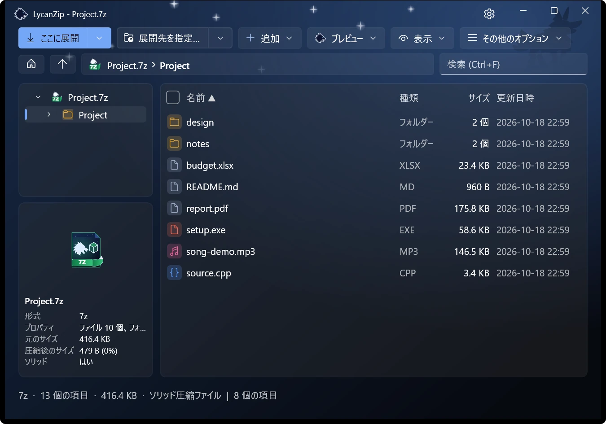
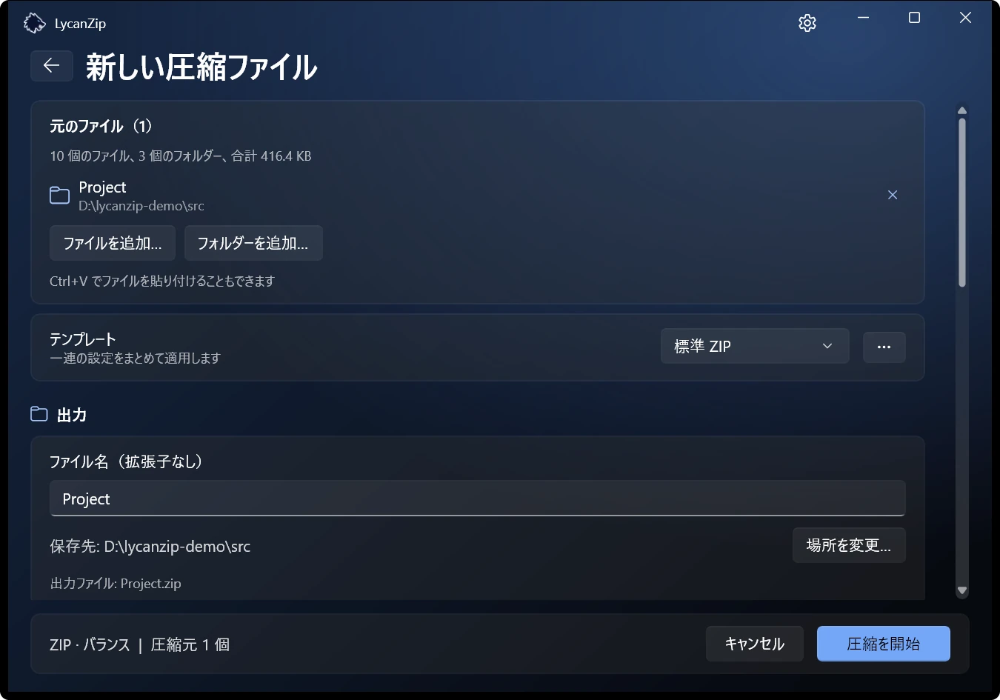
Windows 10 · Windows 11 専用
Zip、7z、tar などに対応し、見た目も操作も Windows 11 そのもの。無料、オープンソース、広告なし、データ収集なし。

1.1 の新機能：プレビュー ウィンドウ、閲覧モード、パスワード マネージャー、圧縮ファイルの形式変換、5 つの言語の追加。 変更点を見る
zip、7z、rar、tar、iso など数十の形式を開けます。zip、7z、tar は AES-256 のパスワード付きで作成できます。閲覧、検索、エクスプローラーへのドラッグでの取り出しに加え、圧縮ファイルを別の形式に変換することもできます。元のファイルは削除するまで残ります。


Big5、GBK、Shift-JIS、EUC-KR のファイル名を持つ古い zip は自動で判別します。そうした圧縮ファイルをアップグレードすると名前が UTF-8 で保存され、どの PC でも正しく読めます。データはそのままコピーされます。
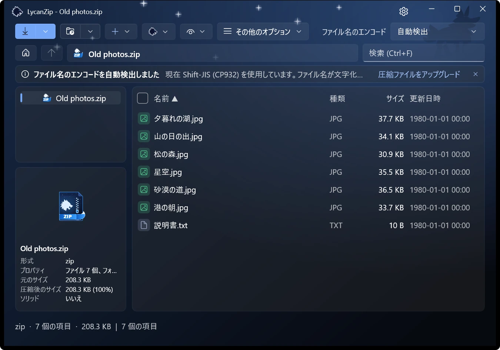
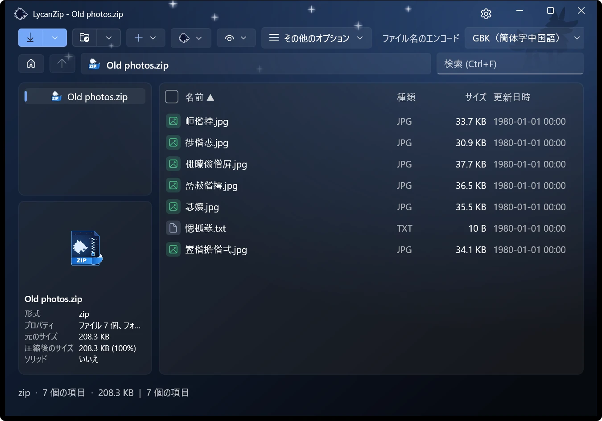
ファイルを選ぶとプレビュー ウィンドウに表示されます。画像、テキスト、PDF、音声に対応。画像はサムネイル列、ズーム、アニメーションに対応したビューアーでも開けます。音楽はタグを表示する内蔵プレーヤーで再生できます。
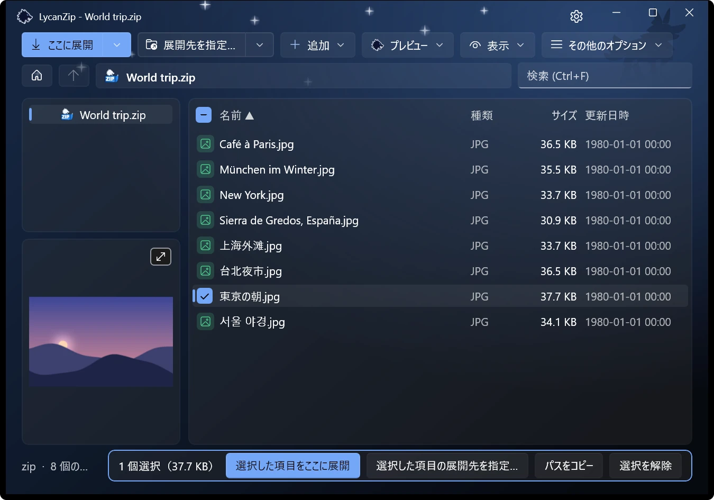
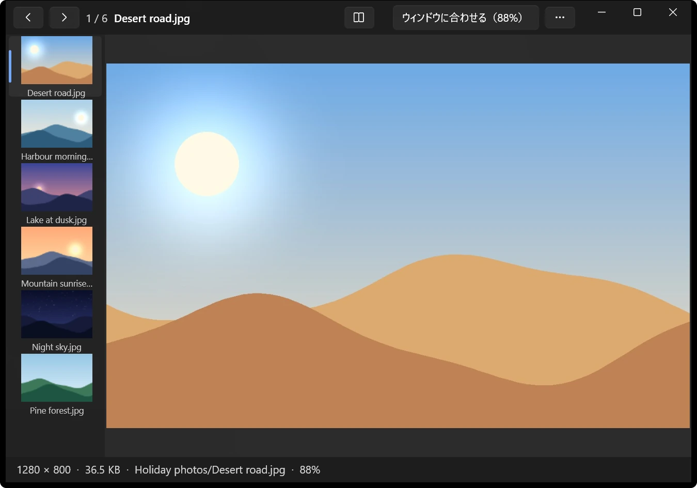
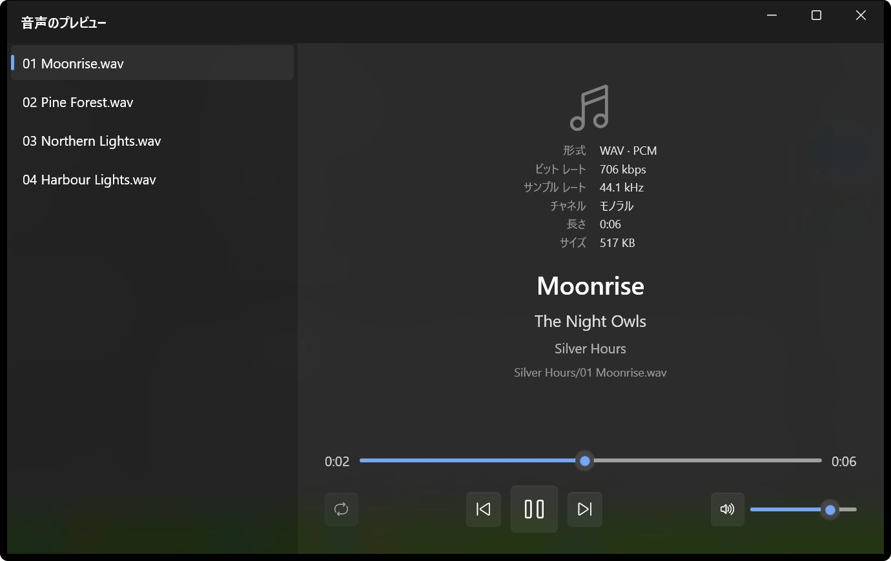
フォルダーをまたいで 1 冊を順番どおりに、見開き 2 ページで、必要なら右から左へ。読んでいたページは本ごとに記憶します。.cbz、.cbr、.cb7、.cbt は直接このモードで開きます。
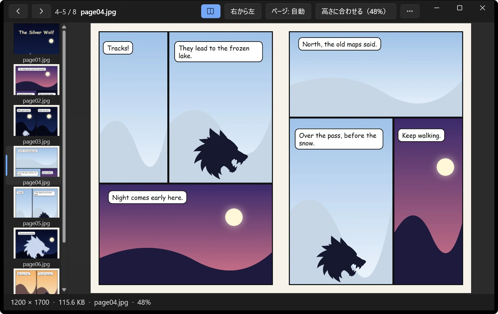
このセッションで使えたパスワードと保存済みのパスワードを、尋ねる前に試します。保存したパスワードは Windows アカウント用に暗号化され、マスター パスワードも設定できます。どこにも送信しません。
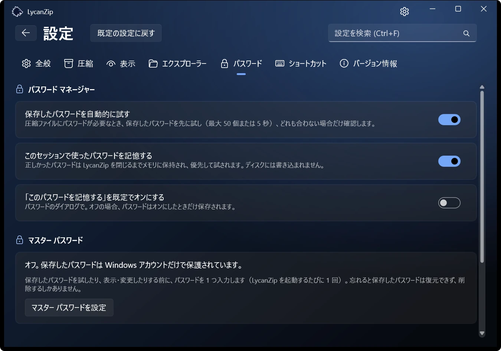
Windows 11 のメニューの最上位に直接項目が並び、「その他のオプションを確認」を開く必要がありません。Windows はこれを署名済みパッケージにしか許可しないため、Microsoft Store 版のみの機能です。他の版では従来のメニューを使います。
ライトまたはダーク、6 つのアクセント カラー、または Windows の設定に合わせることもできます。効果音（2 セット）とアニメーションはオフにできます。
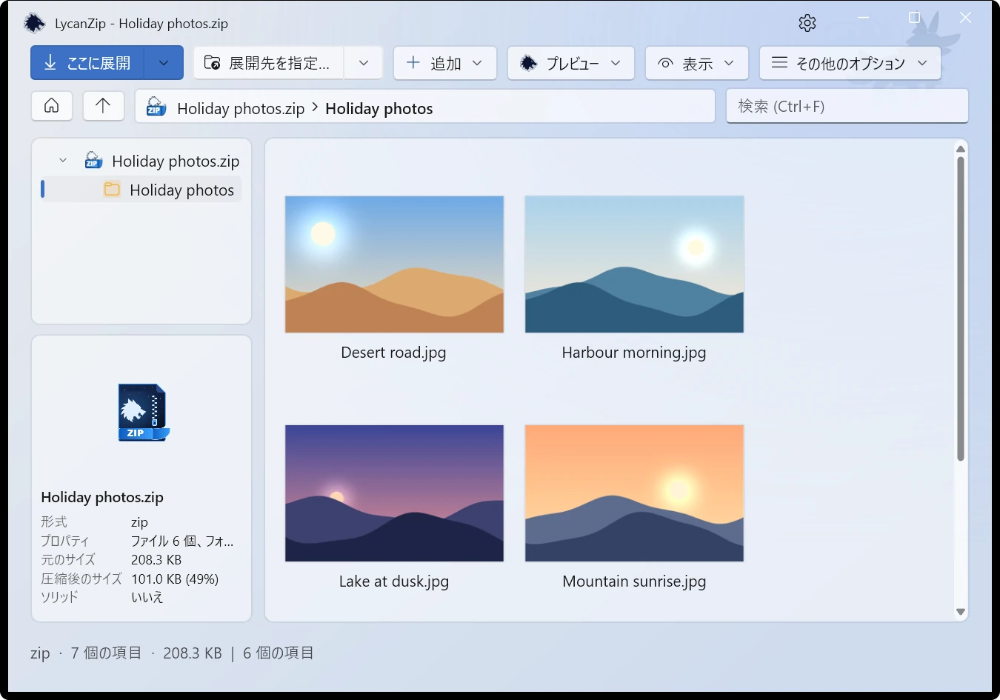
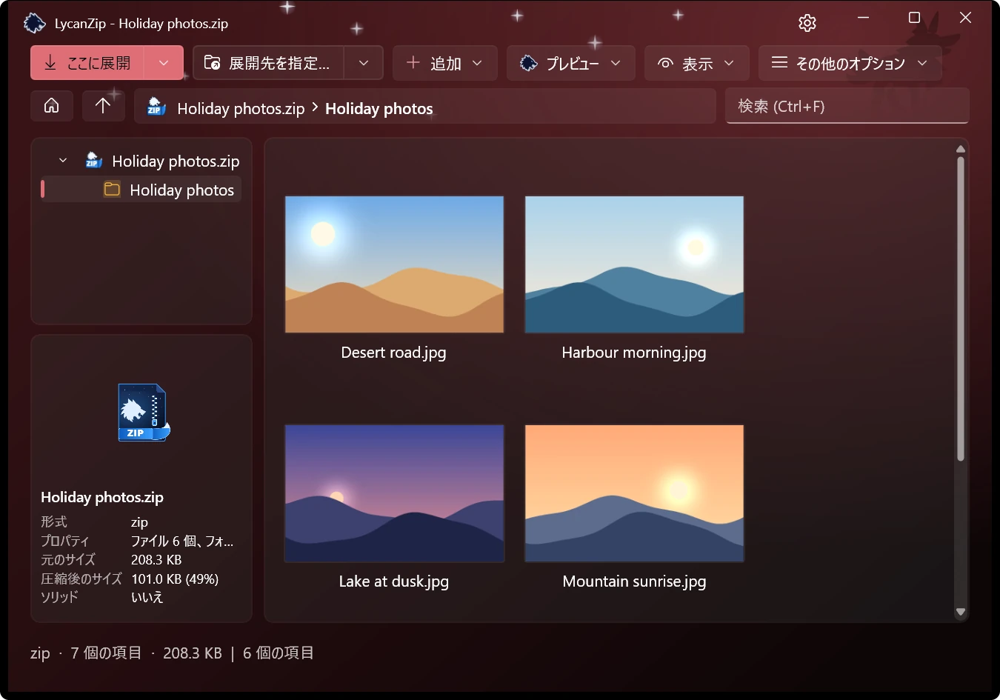
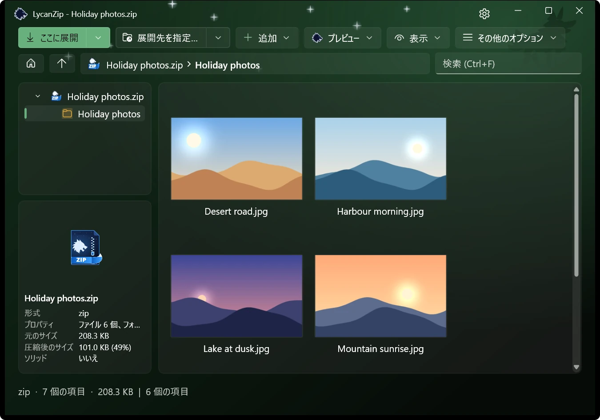
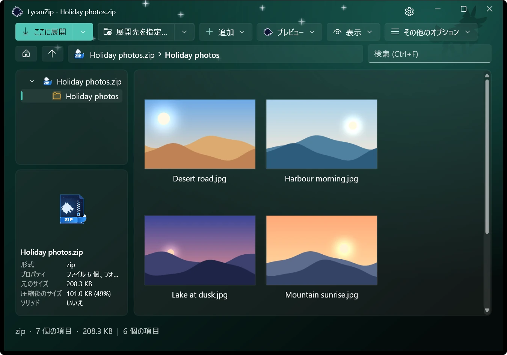
zip、7z、tar の中で追加、削除、名前の変更、置き換えができます。お使いのエディターで編集して保存し直すことも可能です。作業は安全なコピーの上で行います。
テレメトリなし、広告なし、データ収集なし。さらに、開く前に確認する方法が 3 つあります。
Windows の AMSI を通じてお使いのウイルス対策ソフトで、ディスクに展開せずに圧縮ファイルをスキャンします。
ファイル、フォルダー、圧縮ファイルのハッシュを計算します。.sha256 ファイルの検証はダブルクリックだけ。
ワンクリックでそのハッシュの VirusTotal ページを開きます。送るのはハッシュだけで、ファイルは送りません。
危険なパスは拒否し、リンクはたどらず、圧縮爆弾も検出します。
英語、繁体字中国語、簡体字中国語、日本語、韓国語、ドイツ語、スペイン語、フランス語。
MIT ライセンス、ソースは GitHub にあります。広告もアカウントもありません。
オフラインで動作します。プライバシー ポリシーをご覧ください。
圧縮は実績のある 7-Zip エンジンが行います。ライセンスをご覧ください。
空き時間に作っています。役に立ったらコーヒー 1 杯分の支援を。不具合の報告も助かります。